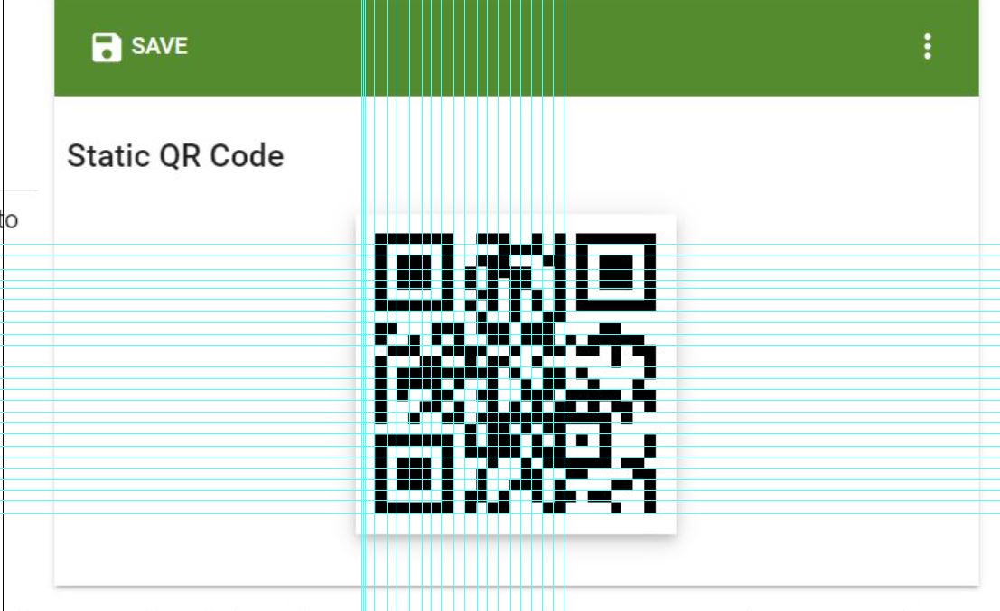
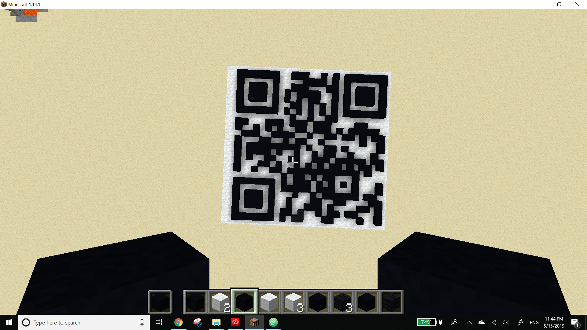
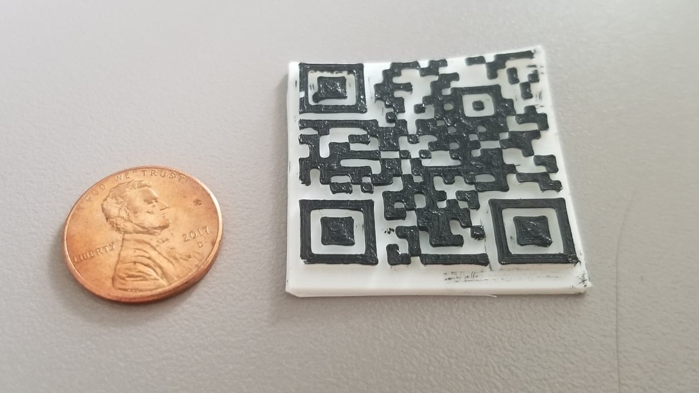

For my final project, I went through a series of ideas. I finally decided to create a 3-D print of a QR code created in Minecraft in order to bring viewers closer to my netart piece of a self-portrait through clickable images.
Artist Statement
I first got my QR code generated from the online source, the-qrcode-generator.com, in order to make my 3D print of a link to my netart artpiece.
Here is the meaning of QR code.
And here is the QR png I downloaded from the the QR code generating website.
The process of creating the QR code.
The QR code existing in minecraft space.

The relative size of the printed QR code and printed two more as well!

The link to the netartpiece---i am ting ting--- Welcome to my self-portrait net art piece
My netart piece is titled "i am ting ting" and it is a self portrait of the photos I have taken over the past few years. The photos were downloaded from my Google Photos where over 20,000 photos are stored. In a sense, the viewer navigates trough a step by step encounter of the content of the website to somewhat understand the artist. Hence, this piece mediates an echo of the self portrait without a face, but the eyes of the artist.